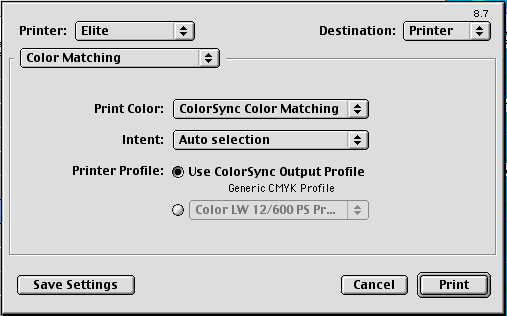

Legacy Document
Important: This document is part of the Legacy section of the ADC Reference Library. This information should not be used for new development.
Current information on this Reference Library topic can be found here:
ADC Home > Reference Library > Technical Notes > Legacy Documents > Printing >
Important: This document is part of the Legacy section of the ADC Reference Library. This information should not be used for new development.
Current information on this Reference Library topic can be found here:
|
Scriptable printingUntil the introduction of LaserWriter 8.7, it has been difficult for an application to extend the scriptability of the print Apple event. The application received the print event, but it was the printer driver that controlled and used the settings for the print job. In addition, the print settings used by each driver have been different. In LaserWriter 8.7, the driver allows an AppleScript script to give the control to an application by introducing parameters to set and control most of the user options available via the Print dialog. Applications are now provided with a coercion mechanism to turn these parameters into a valid print record with the options correctly configured based on the script. In order to accomplish this, new vocabulary has been defined to describe and reference the various options in the Print dialog. Technote 1178, "Scriptable Printing," details the extensions to the print event that allow scripters to control printing, and describes the changes applications and printer drivers will need to make to support these new printing features. PostScript Output Filter Plug-insLaserWriter 8.7 adds the ability for developers to create custom output filters to preprocess the PostScript code emitted by the driver prior to its being sent to a device using either a built-in I/O type or a custom hose. This allows developers to modify the PostScript code as it is emitted by the driver, or to insert their own PostScript code into any PostScript stream emitted by the driver. PostScript output filter plug-ins can have user controls that appear in the LaserWriter 8.7 Print Dialog as custom panels. These panels work the same way as the driver's built-in panels; for example, users can save filter defaults on a printer-by-printer basis, just as they do for other portions of the print dialog. For more information on PostScript Filters, see Technote 1179, "PostScript Output Filters For LaserWriter 8.7."
Foreground default queryApple has received requests for the ability for spoolers to default their print jobs to foreground. Therefore, with the 8.7 release, Apple has added a query that allows developers to enable this feature from their spooler:
Valid replies are If the user has saved defaults for this printer, the behavior is the same as LaserWriter 8.6.5 and earlier. If the user does not have saved defaults for this printer, the results of the query are used.
When LaserWriter 8.7 brings up the print dialog, if there are no stored defaults for the printer, it tests the stored results of the query done at autosetup time. If the result from the query was Other Improvements (ColorSync, FontSync, 2-Byte TrueType Fonts)ColorSync supportColorSync 3.0, shipping as part of Mac OS 9, provides an improved ColorSync Control Panel to manage and control profiles for a complete workflow. LaserWriter 8.7 provides improved ColorSync integration by allowing the user to use the default output profile specified in the new ColorSync control panel. To use this feature the user needs to select Use ColorSync Output Profile and then Save Settings.

FontSync supportThe FontSync Font IDs are now included in the Job Log. See Technote 1166, "LaserWriter 8.6.5 Job Log Format" for more information on the Job Log. Improved support for 2-Byte TrueType FontsLaserWriter 8.7 synthesizes Bold, Italic, Expanded, Compressed, Shadow, and Outline styles for 2-byte fonts that do not already contain data for these styles. This works in conjunction with the font subsetting technology introduced in LaserWriter 8.6. See Technote 1146, "LaserWriter 8 and Fonts" for more information. SummaryAs you can see, the 8.7 release of the LaserWriter 8 driver has many improvements for both users and developers. ReferencesTechnote 1179: PostScript Output Filters for LaserWriter 8.7 Technote 1178: Scriptable Printing Technote 1146: LaserWriter 8 and Fonts Technote 1144: Writing Custom Hoses for LaserWriter 8.6 Downloadables
|
|